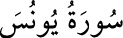

10- YÛNUS SÛRESİ
Yûnus Sûresi, 109 âyet olup 40, 94, 95 ve 96. âyetler Medîne’de, diğerleri Mekke’de
inmiştir. 98. âyette Hz. Yûnus’un kavminden bahsedildiği için sûreye bu ad
verilmiştir.
Mekke halkı, Allah’ın insandan bir peygamber göndereceğine, özellikle kendi
içlerinden bir adamın peygamber olabileceğine inanamıyorlar ve “Allah, Ebû
Tâlib’in yetimi Muhammed’den başka bir peygamber bulamadı mı?” diyorlardı.
Hiç olmazsa hatırı sayılır, zengin ve makam sahibi birisinin peygamber olmasını
daha uygun görüyorlardı. İşte bunun üzerine bu sûre inmiştir.